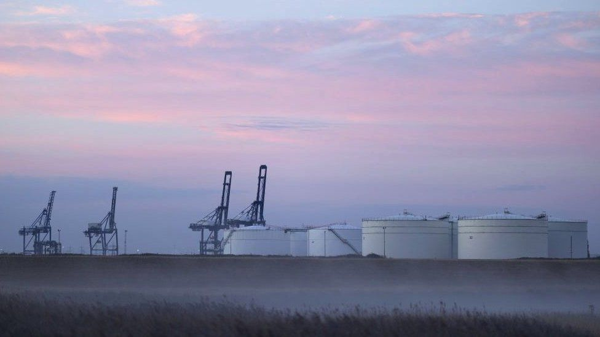
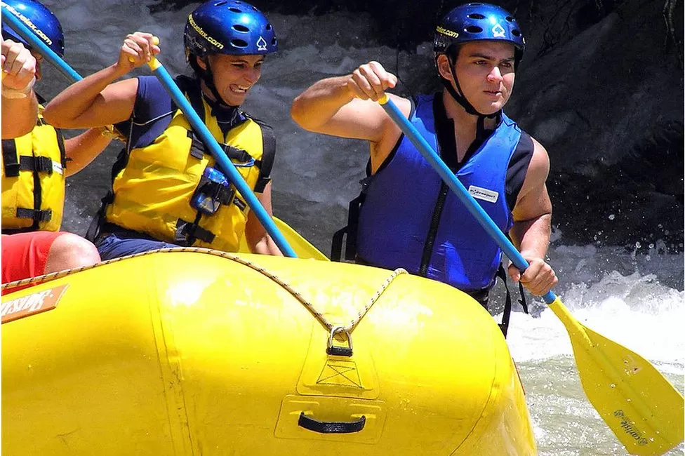

PM will explore energy market reform to cut bills

The government plans to move nuclear and renewable electricity generators to lower price contracts to cut bills, Prime Minister Liz Truss has said. "Renewable and nuclear generators will move on to contracts for difference, to end the situation where electricity prices are set by the marginal price of gas," Truss told Parliament. The price paid to these companies is often set by the most costly generator. That is currently hugely expensive gas. Moving nuclear and renewable generators onto lower-priced contracts "will mean that generators are receiving a fair price reflecting their cost of production, further bringing down the cost of this intervention," Truss said.
The government will ask renewable and nuclear generators to take up new 10 or 15-year contracts at fixed prices well below the current rates, sources familiar with the discussions say. Liz Truss says she won't introduce a windfall tax on energy companies, but she will need to address the issue of their huge profits. The energy market consultancy Cornwall Insight estimates energy prices are likely to be more than £40bn higher because of the fact that some electricity generators are being paid based on the hugely inflated gas price. That is a particularly pressing issue when the government is planning to spend tens of billions of pounds of taxpayers' money subsidising the nation's energy bills. Paying renewable energy companies less than the market price for gas would mean a very significant reduction in revenues for them, at least in the medium term. Yet RenewableUK, the industry body which represents most of the wind power companies in this group, has accepted this approach in principle. "We're keen to work collaboratively with the government" on the issue, RenewableUK's CEO Dan McGrail said. "It makes no sense to allow the exorbitantly expensive cost of gas to set the price for the whole of the electricity market", he said. How much are energy bills rising under the new plan? What is the windfall tax on oil and gas companies? What is fracking? RenewableUK represents most of the biggest renewable businesses in the UK including Orsted, Scottish Power, SSE, RWE and EDF. It confirms its members have had a "series of discussions" with the government on the issue and says it is waiting for the government to "take a position". So, why might they accept this huge potential hit to profits?
RenewableUK says it is because the companies recognise it isn't fair for consumers to face such high prices at a time of national crisis. Those close to the discussions say they are probably also being offered a generous long-term price to reflect the short-term loss of profits. Shadow climate change secretary Ed Miliband told BBC Radio 4's Today programme on Thursday that such long-term fixed-price contracts would have the effect of ensuring huge profits for electricity companies for years to come. "This is a proposal from (energy industry trade association) Energy UK, and let's be clear about this proposal: This would lock in massive windfall profits for these electricity generators. "Let me explain why: what Energy UK have said is we'll accept slightly lower prices now, so we can have much higher prices over the following 15 years. "This would be a terrible deal for the British people, a terrible deal for billpayers. "It is much better - if there are these unexpected windfalls, and there are - the right thing to do, the fair thing to do, is not to do some dodgy deal with these companies, but to do a windfall tax. Liz Truss may be ideologically opposed to windfall taxes but paying private companies billions of pounds in excess profits from the public purse is also a political liability. The companies know that if a solution isn't found she might deicide she has to hold her nose and impose such a tax, and that if she does, she might go after the billions of profits the companies have already made.
Three ways climate change makes adventure tourism riskier

Climate change is making adventure tourism more challenging and sometimes riskier, travel industry bodies, tour operators and experts have told the BBC. Rockfalls on some Alpine hiking routes this summer, wildfires that threatened campsites in southern Europe and the US, and landslides and floods affecting South American rafting rivers can all be seen as impacts of climate change, they argue.
"The tourism sector is increasingly challenged by extreme weather events caused by climate change," says Dirk Glaesser, director of sustainable development for the United Nations World Tourism Organisation (UNWTO). "The risks in adventure and nature-based tourism are different now, they require constant monitoring," says Christina Beckmann, a climate expert with the Adventure Travel Trade Association (ATTA), whose members include 1,000 national tourism boards and 33,000 individuals. "The impacts of climate change mean we need to keep our eyes more open to respond to the changes, and keep reviewing our risk assessments."